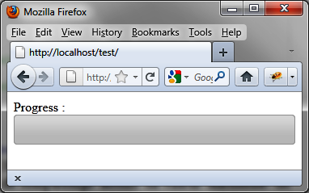
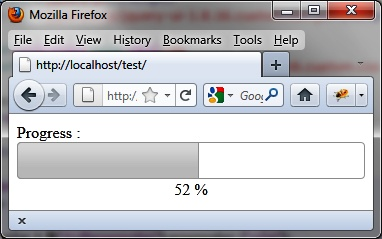

{% include JB/setup %}
{% raw %}
<div>
<div class="book" title="Examples of Using Progress Bars"><div class="book"><div class="book"><div class="book"><h1 class="title2"><a id="examples_of_using_progress_bars" class="calibre1"></a>Examples of Using Progress Bars</h1></div></div></div><p class="calibre7">This section includes examples of different ways to use progress
    bars.</p><div class="book" title="Incrementing a Progress Bar"><div class="book"><div class="book"><div class="book"><h2 class="title5"><a id="incrementing_a_progress_bar" class="calibre1"></a>Incrementing a Progress Bar</h2></div></div></div><p class="calibre7">Here is a typical use of progress bars. We use a counter (timer)
      to steadily increment the percentage of fill in the progress bar:</p><a id="I_programlisting6_d1e4865" class="firstname"></a><pre class="programlisting">&lt;script src = jquery.js&gt;&lt;/script&gt;
&lt;script src = jqueryui/js/jquery-ui-1.8.16.custom.min.js&gt;&lt;/script&gt;

&lt;link rel=stylesheet type=text/css
      href=jqueryui/css/smoothness/jquery-ui-1.8.16.custom.css /&gt;

Progress : &lt;div id=progressbar&gt;&lt;/div&gt;

&lt;script&gt;

$("div#progressbar").progressbar ();

var value = 0;
<span class="firstname"><strong class="userinput">var timer = setInterval (function ()</strong></span>
<span class="firstname"><strong class="userinput">{</strong></span>
  <span class="firstname"><strong class="userinput">$("div#progressbar").progressbar ("value", value);</strong></span>
  <span class="firstname"><strong class="userinput">value++;</strong></span>
  <span class="firstname"><strong class="userinput">if (value &gt; 100) clearInterval (timer);</strong></span>
<span class="firstname"><strong class="userinput">}, 10);</strong></span>

&lt;/script&gt;</pre><p class="calibre7">The callback function specified in <code class="literal">setInterval (delay, callback)</code> is called at the
      end of each specified time period (here, every 10 milliseconds).
      <code class="literal">clearInterval (timer)</code> prevents this
      callback function from being called once the percentage reaches its
      maximum value of 100 (<a class="ulink" href="ch06s05.html#the_progress_bar_is_completely_filled" title="Figure 6-4. The progress bar is completely filled">Figure 6-4</a>).</p><div class="book"><div class="figure"><a id="the_progress_bar_is_completely_filled" class="firstname"></a><div class="book"><div class="book"><a id="I_mediaobject6_d1e4899" class="firstname"></a></div></div><p class="title4">Figure 6-4. The progress bar is completely filled</p></div></div></div><div class="book" title="Performing Processing at Different Stages of Completion"><div class="book"><div class="book"><div class="book"><h2 class="title5"><a id="performing_processing_at_different_stage" class="calibre1"></a>Performing Processing at Different Stages of Completion</h2></div></div></div><p class="calibre7">In addition to incrementing the progress bar, it is possible to
      perform processing at particular stages of completion. Let’s use this
      functionality to update a numerical display of percent complete every
      time there is a change in the percent filled (shown in <a class="ulink" href="ch06s05.html#the_percentage_complete_is_displayed_num" title="Figure 6-5. The percentage complete is displayed numerically">Figure 6-5</a>). This is done
      using <code class="literal">options.change</code>, which notifies
      of any change in the value of the progress bar fill.</p><a id="I_programlisting6_d1e4914" class="firstname"></a><pre class="programlisting">&lt;script src = jquery.js&gt;&lt;/script&gt;
&lt;script src = jqueryui/js/jquery-ui-1.8.16.custom.min.js&gt;&lt;/script&gt;

&lt;link rel=stylesheet type=text/css
      href=jqueryui/css/smoothness/jquery-ui-1.8.16.custom.css /&gt;

Progress : &lt;div id=progressbar&gt;&lt;/div&gt;
&lt;div id=percent style=text-align:center&gt;0&lt;/div&gt;

&lt;script&gt;

<span class="firstname"><strong class="userinput"><code class="userinput">$("div#progressbar").progressbar ({
  change : function (event)
  {
    var value = $("div#progressbar").progressbar ("value");
    $("#percent").html (value + " %");
  }
});</code></strong></span>

var value = 0;
var timer = setInterval (function ()
{
  $("div#progressbar").progressbar ("value", value);
  value++;
  if (value &gt; 100) clearInterval (timer);
}, 10);

&lt;/script&gt;</pre><div class="book"><div class="figure"><a id="the_percentage_complete_is_displayed_num" class="firstname"></a><div class="book"><div class="book"><a id="I_mediaobject6_d1e4923" class="firstname"></a></div></div><p class="title4">Figure 6-5. The percentage complete is displayed numerically</p></div></div></div></div></div>

{% endraw %}

